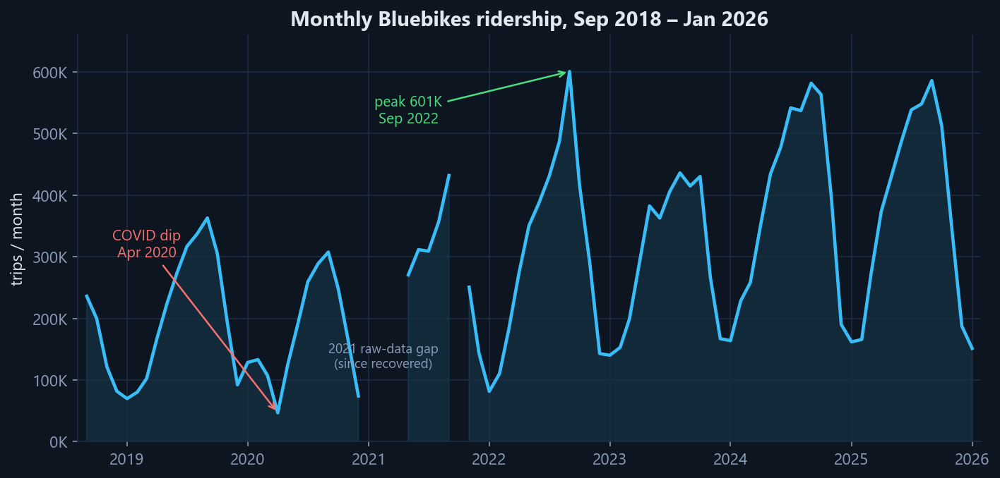
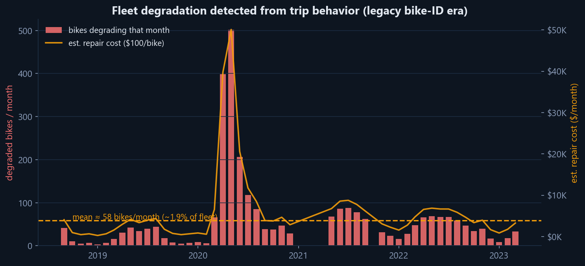
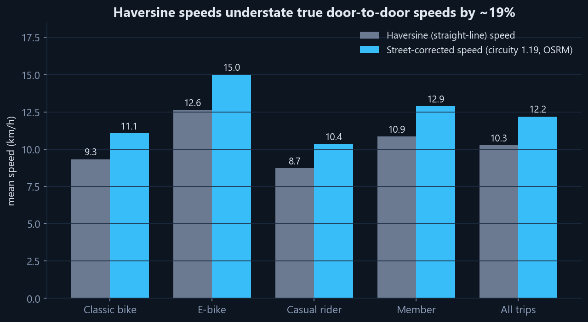
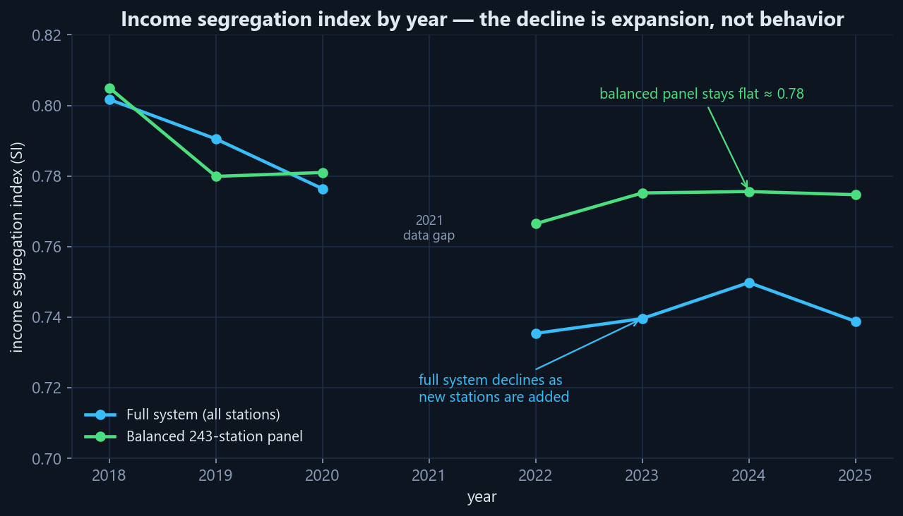
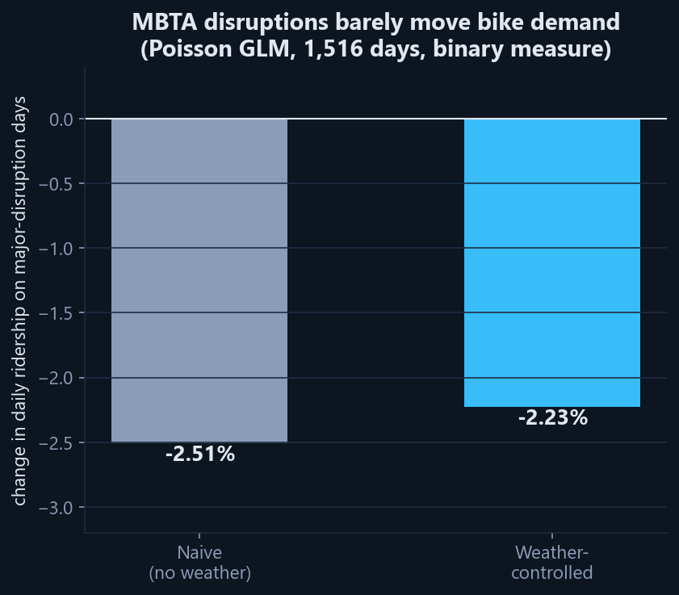
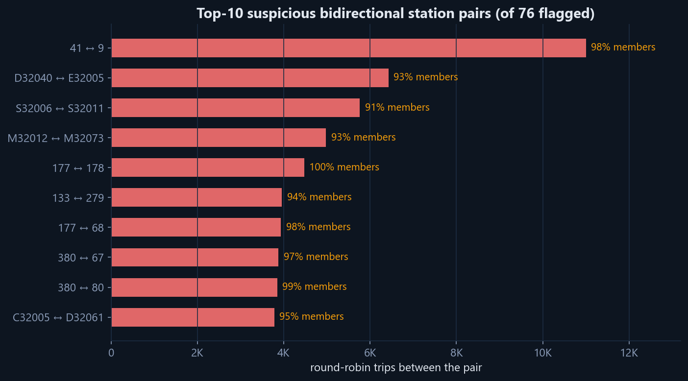

Methods briefing · StreetLight Data
How much mobility insight can you extract
from anonymized trip metadata alone?
Krishna Singh · Northeastern University
24M+ trips 2018 – Jun 2026 · zero GPS traces · zero rider IDs

Sep 2018 – Jun 2026. Strong seasonality, COVID shock, sustained growth — plus messy realities handled in the pipeline: schema break in 2024 (bike IDs dropped), station-ID migration in 2023, negative-duration rows filtered.

Rejection signature: 60–120 s trip, then another departure from the same station ≤5 min (41.3% of short trips). A behavioral health score over 6,891 bikes correlates with rejections at r = −0.28 (p < 0.0001) → ~58 degrading bikes/month, ≈ $70K/yr repair exposure — from metadata alone.

Straight-line speeds systematically understate reality. Measured street circuity = 1.19 (trip-weighted; median 1.155) by routing the top-60 station pairs through OSRM. Corrected speeds: e-bikes 15.0 km/h vs classic 11.1 (+35%); members 12.9 vs casuals 10.4. Elevation contributes <5% — Boston is flat.

The full-system trend and the fixed-panel trend tell opposite stories. Any longitudinal mobility metric on a growing network needs a balanced panel — here that required a crosswalk across the 2023 numeric→alphanumeric station-ID migration.

05b_neu_dock_eval.csv. Two optimistic numbers were retired on the way here: an aggregate R² 0.79 (wrong unit) and in-sample per-station fits (wrong split).
13_movable_stations.csv. Same discipline as the balanced panel: report the counterfactual next to the baseline that could explain it away.

Stage 1 (Isolation Forest, contamination swept 0.05–0.20) flagged 56 unique "farming-like" pairs. Stage 2 — tidality (AM/PM directional flow) + flip-session detection (3+ alternating rides within minutes) — reclassified them: 15 tidal last-mile commute corridors, 41 mixed local hops, 0 farming. Bonus catch: the top pair's apparent March-2023 stop was a station-ID schema artifact; crosswalked, it's a 20,188-trip BU commute corridor. Anomaly ≠ abuse — the metadata can tell the difference.
A GBFS logger snapshots station status every 10 minutes — first pass already flagged 13 stations with docks disabled >48 h and 2 fully offline; broken docks are invisible in trip data alone.
Krishna Singh · Northeastern University · singh.krish@northeastern.edu